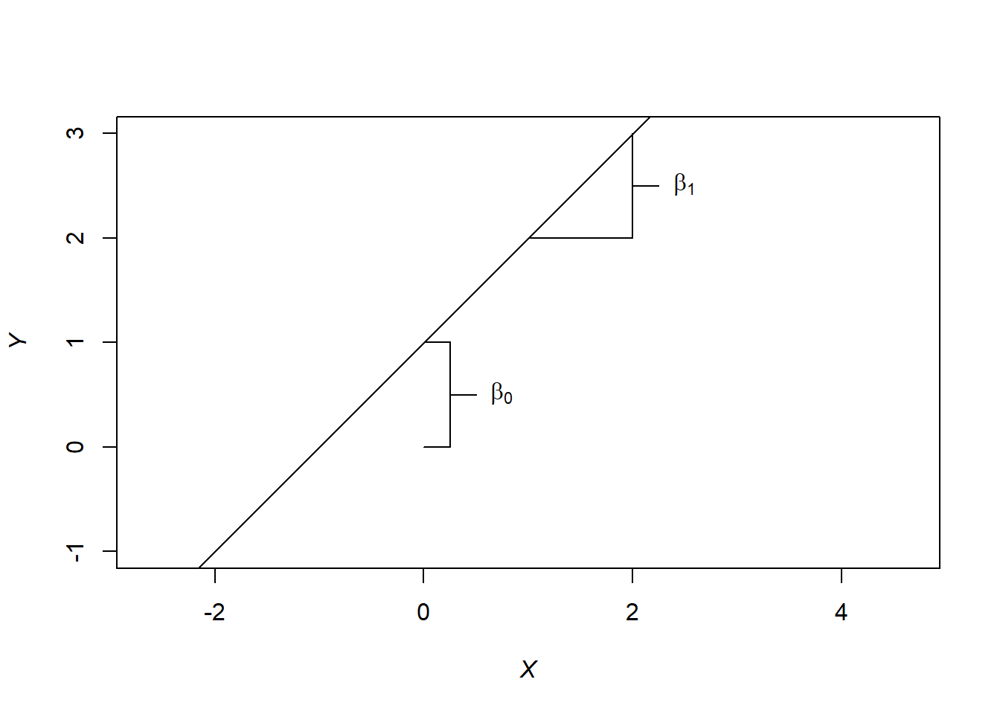
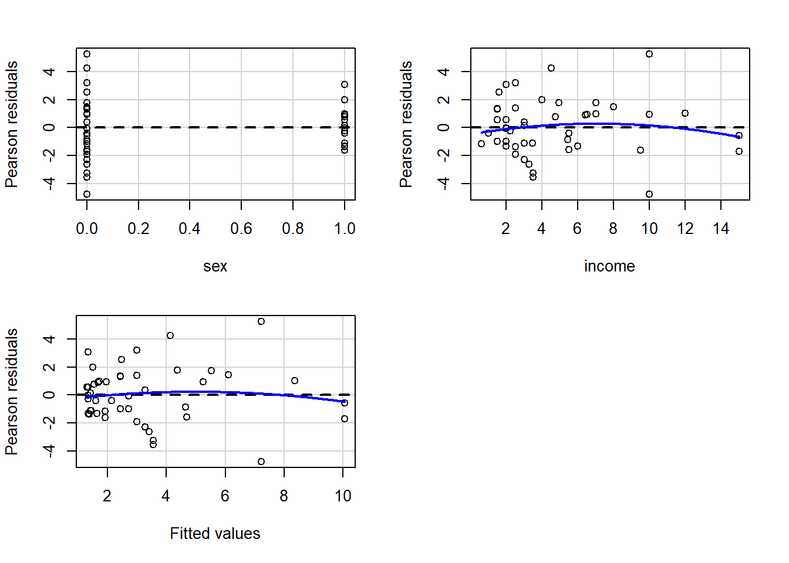
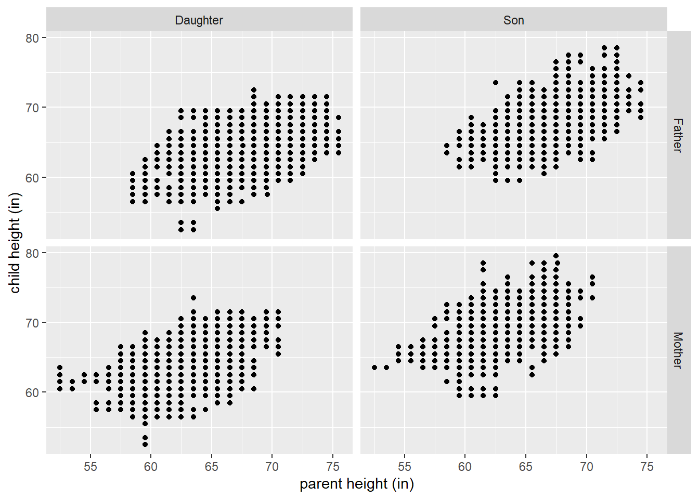

Chapter 5 Defining a linear model
Based on Chapter 2 of LMWR2, Chapter 2 and 3 of ALR4
5.1 Background and terminology
Regression models are used to model the relationship between:
- one or more response variables and
- one or more predictor variables.
The distinction between these two types variables is their purpose in the model.
- Predictor variables are used to predict the value of the response variable.
Response variables are also known as outcome, output, or dependent variables.
Predictor variables are also known as explanatory, regressor, input, dependent, or feature variables.
Note: Because the variables in our model are often interrelated, describing these variables as independent or dependent variables is vague and is best avoided.
A distinction is sometimes made between regression models and classification models. In that case:
- Regression models attempt to predict a numerical response.
- Classification models attempt to predict the category level a response will have.
5.2 Goals of regression
The basic goals of a regression model are to:
- Predict future or unknown response values based on specified values of the predictors.
- What will the selling price of a home be?
- Identify relationships (associations) between predictor variables and the response.
- What is the general relationship between the selling price of a home and the number of bedrooms the home has?
With our regression model, we also hope to be able to:
- Generalize our results from the sample to the a larger population of interest.
- E.g., we want to extend our results from a small set of college students to all college students.
- Infer causality between our predictors and the response.
- E.g., if we give a person a vaccine, then this causes the person’s risk of catching the disease to decrease.
A “true model” doesn’t exist for real data. Thus, finding the true model should not be the goal of a regression analysis. A regression analysis should attempt to find a model that adequately describes the relationship between the response and relevant predictor variables (either in terms of prediction, association, generalization, causality, etc.)
5.3 Regression for Pearson’s height data
Wachsmuth, Wilkinson, and Dallal (2003) compiled child and parent height data from English familes tabulated by Pearson and Lee (1897) and Pearson and Lee (1903). The data are available in the PearsonLee data set in the HistData package (Friendly 2021). The PearsonLee data frame includes the variables:
child: child height (inches).parent: parent height (inches).gp: a factor with levelsfd(father/daughter),fs(father/son),md(mother/daughter),ms(mother/son) indicating the parent/child relationship.par: a factor with levelsFather,Motherindicating the parent measured.chl: a factor with levelsDaughter,Sonindicating the child’s relationship to the parent.
It is natural to wonder whether the height of a parent could explain the height of their child. We can consider a regression analysis that regresses child’s height (the response variable) on parent’s height (the predictor variable). The additional variables gp, par, and chl could also be used as predictor variables in our analysis. We perform an informal (linear) regression analysis visually using ggplot2 (Wickham et al. 2021).
Consider a plot of child’s height versus parent’s height.
data(PearsonLee, package = "HistData") # load data
library(ggplot2) # load ggplot2 package
# create ggplot object for repeated use
# we'll be using common aesthetics across multiple geometries
# so we put them in the ggplot function
# also improve the x, y labels
ggheight <- ggplot(data = PearsonLee,
mapping = aes(x = parent, y = child)) +
xlab("parent height (in)") + ylab("child height (in)")
ggheight + geom_point() # scatter plot of child vs parent height
We see a positive linear association between parent height and child height: as the height of the parent increases, the height of the child also tends to increase.
A simple linear regression model describes the relationship between a response and a predictor variable using the “best fitting” straight line (we’ll formalize what best means later). We add the estimated simple linear regression model to our previous plot below using the geom_smooth function. The line fits reasonably well.
ggheight + geom_point() +
geom_smooth(method = lm, formula = y ~ x, se = FALSE) # add estimated line
We may also wonder whether the type of parent (father/mother) or child (daughter/son) affects the relationship. We facet our scatter plots based on the par and chl variables below. While the overall patterns are similar, we notice that Father heights tend to be larger than Mother heights and Son heights tend to be larger than Daughter heights.
ggheight + geom_point() +
facet_grid(par ~ chl) # facet the data by parent/child type
Having seen the previous graphic, we may wonder whether we can better model the relationship between parent and child height by accounting for which parent and child were measured. An interaction model assumes that the intercept and slope of each combination of parent/child is the different. We fit and plot an interaction model below.
ggheight + geom_point() + facet_grid(par ~ chl) +
geom_smooth(method = lm, formula = y ~ x, se = FALSE) # add interaction model to data
Other questions we could explore are whether the slopes across the different parent/child combinations are the same, whether the variability of the data is constant as parent height changes, predicting heights outside the range of the observed data, the precision of our estimated model, etc.
Regression analysis will generally be much more complex that was is presented above, but this example hopefully gives you an idea of the kinds of questions regression analysis can help you answer.
5.4 Definition of a linear model
A linear model is a regression model in which the regression coefficients (to be discussed later) enter the model linearly.
- A linear model is just a specific type of regression model.
5.4.1 Basic construction and relationships
We begin by defining notation for the objects we will need and clarifying some of their important properties.
- \(Y\) denotes the response variable.
- The response variable is treated as a random variable.
- We will observe realizations of this random variable for each observation in our data set.
- \(X\) denotes a single predictor variable. \(X_1\), \(X_2\), , \(X_{p-1}\) will denote the predictor variables when there is more than one predictor variable.
- The predictor variables are treated as non-random varables.
- We will observe values of the predictors variables for each observation in our data set.
- \(\beta_0\), \(\beta_1\), , \(\beta_{p-1}\) denote regression coefficients.
- Regression coefficients are statistical parameters that we will estimate from our data.
- Like all statistical parameters, regression coefficients are treated as fixed (non-random) but unknown values.
- Regression coefficients are not observable.
- \(\epsilon\) denotes error.
- The error is not observable.
- The error is treated as a random variable.
- The error is assumed to have mean 0, i.e., \(E(\epsilon) = 0\).
- Since \(E(\epsilon) = 0\) and \(X\) is non-random, the expectation of \(\epsilon\) conditional on \(X\) is also 0, i.e., \(E(\epsilon | X) = 0\).
- In this context, error doesn’t mean “mistake” or “malfunction.” \(\epsilon\) is simply the deviation of the response from its mean.
Then a linear model for \(Y\) is defined by the equation \[\begin{equation} Y = \beta_0 + \beta_1 X_1 + \beta_2 X_2 + \cdots + \beta_{p-1} X_{p-1} + \epsilon. \tag{5.1} \end{equation}\]
We now emphasize the relationship between the response, the mean response, and the error. The mean of the response variable will depend on the values of the predictor variables. Thus, we can only discuss the expectation of the response variable conditional on the values of the predictor variables. This is denoted as \(E(Y | X_1, \ldots, X_{p-1})\).
For simplicity, assume our linear model only has a single predictor (this is an example of simple linear regression). Based on what we’ve presented, we have that
\[\begin{align} E(Y|X) &= E(\beta_0 + \beta_1 X + \epsilon | X) \\ &= E(\beta_0 | X) + E(\beta_1 X | X) + E(\epsilon | X) \\ &= \beta_0 + \beta_1 X + 0\\ &= \beta_0 + \beta_1 X. \end{align}\]
The second line follows from the fact that the expectation of a sum of random variables is the sum of the expectation of the random variables. The third line follows from the fact that the expected value of a constant (non-random) value is the constant (the regression coefficients and \(X\) are non-random) and by our assumption that the errors have mean 0 (unconditionally or conditionally on the predictor variable.)
Thus, we see that we see that for a simple linear regression model \[ Y = E(Y|X) + \epsilon.\] For a model with multiple predictors, this extends to \[Y = E(Y|X_1, X_2, \ldots, X_{p-1}) + \epsilon.\] Thus, our response may be written as the sum of the mean response conditional on the predictors, \(E(Y|X_1, X_2, \ldots, X_{p-1})\), and the error. This is why previously we discussed the fact that the error is simply the deviation of the response from its mean.
Alternatively, one can say that a regression model is linear if the mean function can be written as a linear combination of the regression coefficients and known values, i.e., \[E(Y|X_1, X_2, \ldots, X_{p-1}) = \sum_{j=0}^{p-1} c_j \beta_j,\] where \(c_0, c_1, \ldots, c_{p-1}\) are known values. In fact, the \(c_i, i = 1,2,\ldots,n\) can be any function of \(X_1,X_2,\ldots,X_n\)! e.g., \(c_1 = X_1 * X_2 * X_3\), \(c_3 = X_2^2\), \(c_8 = ln(X_1)/X_2^2\).
Some examples of linear models:
- \(E(Y|X) = \beta_0 + \beta_1 X^2\).
- \(E(Y|X_1, X_2) = \beta_0 + \beta_1 X_1 + \beta_2 X_2\).
- \(E(Y|X_1, X_2) = \beta_0 + \beta_1 X_1 + \beta_2 X_2 + \beta_3 X_1 * X_2\).
- \(E(Y|X_1, X_2) = \beta_0 + \beta_1 ln(X_1) + \beta_2 X_2^{-1}\).
Some examples of non-linear models:
- \(E(Y|X) = \beta_0 + e^{\beta_1} X\).
- \(E(Y|X) = \beta_0 + \beta_1 X/(\beta_2 + X)\).
5.4.2 As a system of equations
A linear regression analysis will model the data using a linear model. Suppose we have sampled \(n\) observations from a population. We now introduce some additional notation:
- \(Y_1, Y_2, \ldots, Y_n\) denote the response values for the \(n\) observations.
- \(x_{i,j}\) denotes the observed value of predictor \(j\) for observation \(i\).
- We use lowercase \(x\) to indicate that this is the observed value of the predictor.
- \(\epsilon_1, \epsilon_2, \ldots, \epsilon_n\) denote the errors for the \(n\) observations.
The linear model relating the responses, the predictors, and the errors is defined by the system of equations \[\begin{equation} Y_i = \beta_0 + \beta_1 x_{i,1} + \beta_2 x_{i,2} + \cdots + \beta_{p-1} x_{i,p-1} + \epsilon_i,\quad i=1,2,\ldots,n. \tag{5.2} \end{equation}\]
Based on our previous work, we can also write Equation (5.2) as \[\begin{equation} Y_i = E(Y_i | X_1 = x_{i,1}, \ldots, X_{p-1} = x_{i,p-1}) + \epsilon_i,\quad i=1,2,\ldots,n. \end{equation}\]
5.4.3 Using matrix notation
The regression coefficients are said to enter the model linearly, which is why this type of model is called a linear model. To see this more clearly, we represent the model using matrices. We define the following notation:
- \(\mathbf{y} = [Y_1, Y_2, \ldots, Y_n]^T\) denotes the column vector containing the \(n\) responses.
- \(\mathbf{X}\) denotes the matrix containing a column of 1s and the observed predictor values, specifically, \[\mathbf{X} = \begin{bmatrix} 1 & x_{1,1} & x_{1,2} & \cdots & x_{1,p-1} \\ 1 & x_{2,1} & x_{2,2} & \cdots & x_{2,p-1} \\ \vdots & \vdots & \vdots & \vdots & \vdots \\ 1 & x_{n,1} & x_{n,2} & \cdots & x_{n,p-1} \end{bmatrix}.\]
- \(\boldsymbol{\beta} = [\beta_0, \beta_1, \ldots, \beta_{p-1}]^T\) denotes the column vector containing the \(p\) regression coefficients.
- \(\boldsymbol{\epsilon} = [\epsilon_1, \epsilon_2, \ldots, \epsilon_n]^T\) denotes the column vector contained the \(n\) errors. Then the system of equations defining the linear model in (5.2) can be written as \[\mathbf{y} = \mathbf{X}\mathbf{\beta} + \boldsymbol{\epsilon}.\] Thus, a linear model can be represented as a system of linear equations using matrices. A model that cannot be represented as a system of linear equations using matrices is not a linear model.
5.5 Summarizing the components of a linear model
We have already introduced a lot of objects. To aid in making sense of their notation, their purpose in the model, whether they can be observed, and whether they are modeled as a random variable (vector) or fixed, non-random values, we summarize things below.
We’ve already talked about observing the response variable and the predictor variables. So these objects are observable. However, we have no way to measure the regression coefficients or the error. These are not observable.
On the other hand, we treat the response variable as a random variable. Perhaps surprisingly, we treated the predictor variables as a fixed, non-random variables. The regression coefficients are treated as fixed, non-random but unknown values. This is standard for parameters in a statistical model. The errors are also treated as random variables. In fact, since both the predictor variables and the regression coefficients are non-random, the only way for the response to be a random variable based on Equation (5.2) is for the errors to be random.
We summarize this information in the table below for the objects previously discussed using the various notations introduced.
| Notation | Description | Observable | Random |
|---|---|---|---|
| \(Y\) | response variable | Yes | Yes |
| \(Y_i\) | response value for the \(i\)th observation | Yes | Yes |
| \(\mathbf{y}\) | the \(n\times 1\) column vector of response values | Yes | Yes |
| \(X\) | predictor variable | Yes | No |
| \(X_j\) | the \(j\)th predictor variable | Yes | No |
| \(x_{i,j}\) | the value of the \(j\)th predictor variable for the \(i\)th observation | Yes | No |
| \(\mathbf{X}\) | the \(n\times p\) matrix of predictor values | Yes | No |
| \(\beta_j\) | the regression coefficient associated with the \(j\)th predictor variable | No | No |
| \(\boldsymbol{\beta}\) | the \(p\times 1\) column vector of regression coefficients | No | No |
| \(\epsilon\) | the error | No | Yes |
| \(\epsilon_i\) | the error associated with observation \(i\) | No | Yes |
| \(\boldsymbol{\epsilon}\) | the \(n\times 1\) column vector of errors | No | Yes |
5.6 Types of regression models
The are many “named” types of regression models. You may hear or see people use these terms when describing their model. Here is a brief overview of some common regression models.
| Name | Defining characteristics |
|---|---|
| Simple | an intercept term and one predictor variable |
| Multiple | more than one predictor variable |
| Multivariate | more than one response variable |
| Linear | the regression coefficients enter the model linearly |
| Analysis of variance (ANOVA) | predictors are all categorical |
| Analysis of covariance (ANCOVA) | at least one quantitative predictor and at least one categorical predictor |
| Generalized linear model (GLM) | a type of “generalized” regression model when the responses do not come from a normal distribution. |
5.7 Standard linear model assumptions
The formulation of a linear model typically makes additional assumptions beyond the ones previously mentioned, specifically, about the errors, \(\epsilon_1,\epsilon_2,\ldots,\epsilon_n\).
We have already mentioned that fact that we are assuming \(E(\epsilon_i)=0\) for \(i=1,2,\ldots,n\).
We also typically assume that the errors have constant variances, i.e., \[var(\epsilon_i) = \sigma^2, \quad i=1,2,\ldots,n,\] and that the errors are uncorrelated, i.e., \[cov(\epsilon_i, \epsilon_j) = 0, \quad i,j=1,2,\ldots,n,\quad i\neq j.\]
Additionally, we assume that the errors are identically distributed. Formally, that may be written as \[\begin{equation} \epsilon_i \sim F, i=1,2,\ldots,n, \tag{5.3} \end{equation}\] where \(F\) is some arbitrary distribution. The \(\sim\) means “distributed as.” In other words, Equation (5.3) means, “\(\epsilon_i\) is distributed as \(F\) for \(i\) equal to \(1,2,\ldots,n\).” However, it is more common to assume the errors have a normal (Gaussian) distribution. Two uncorrelated normal random variables are also independent (this is true for normal random variables, but is not generally true for other distributions). Thus, we may concisely state the typical error assumptions as \[\epsilon_1,\epsilon_2,\ldots,\epsilon_n \stackrel{i.i.d.}{\sim} N(0, \sigma^2),\] which combines the following assumptions:
- \(E(\epsilon_i)=0\) for \(i=1,2,\ldots,n\).
- \(var(\epsilon_i)=0\) for \(i=1,2,\ldots,n\).
- \(cov(\epsilon_i,\epsilon_j)=0\) for \(i\neq j\) with \(i,j=1,2,\ldots,n\).
- \(\epsilon_i\) has a normal distribution for \(i=1,2,\ldots,n\).
5.8 Mathematical interpretation of coefficients
The regression coefficients have simple mathematical interpretations in basic settings.
5.8.1 Coefficient interpretation in simple linear regression
Suppose we have a simple linear regression model, so that \(E(Y|X)=\beta_0 + \beta_1 X.\) The interpretations of the coefficients are:
- \(\beta_0\) is the expected response when the predictor is 0, i.e., \(\beta_0=E(Y|X=0)\).
- \(\beta_1\) is the expected change in the response when the predictor increases 1 unit, i.e., \(\beta_1=E(Y|X=x_0+1)-E(Y|X=x_0)\).
5.8.2 Coefficient interpretation in multiple linear regression
Suppose we have a multiple linear regression model, so that \(E(Y|X_1,\ldots,X_{p-1})=\beta_0 + \beta_1 X_1 + \cdots + \beta_{p-1} X_{p-1}.\) Let \(\mathcal{X} = \{X_1,\ldots,X_{p-1}\}\) be the set of predictors and \(\mathcal{X}_{-j} = \mathcal{X}\setminus\{X_j\}\), i.e., the set of predictors without \(X_j\).
The interpretations of the coefficients are:
- \(\beta_0\) is the expected response when all predictors are 0, i.e., \(\beta_0=E(Y|X_1=0,\ldots,X_{p-1}=0)\).
- \(\beta_j\) is the expected change in the response when predictor \(j\) increases 1 unit and the other predictors stay the same, i.e., \(\beta_j=E(Y|\mathcal{X}_{-j} = \mathbf{x}^*, X_{j+1} = x_{0}+1)-E(Y|\mathcal{X}_{-j} = \mathbf{x}^*, X_{j+1} = x_{0})\) where \(\mathbf{x}^*\in \mathbb{R}^{p-2}\) is a fixed vector of length \(p-2\) (the number of predictors excluding \(X_j\)).
5.9 Exercises
- If given a set of data with several variables, how would you decide what the response variable and the predictor variables would be?
- Which objects in the linear model formula in Equation (5.1) are considered random? Which are considered fixed?
- Which objects in the linear model formula in Equation (5.1) are observable? Which are not observable?
- What are the typical goals of a regression analysis?
- List the typical assumptions made for the errors in a linear model?
- Without using a formula, what is the basic difference between a linear model and a non-linear model?
- In the context of simple linear regression under the standard assumptions, show that \(\beta_0=E(Y|X=0)\).
- In the context of simple linear regression under the standard assumptions, show that \(\beta_1=E(Y|X=x_0+1)-E(Y|X=x_0)\).
- In the context of multiple linear regression under the standard assumptions, show that \(\beta_0=E(Y|X_1=0,\ldots,X_{p-1}=0)\).
- In the context of multiple linear regression under the standard assumptions, show that \(\beta_j=E(Y|\mathcal{X}_{-j} = \mathbf{x}^*, X_{j+1} = x_{0}+1)-E(Y|\mathcal{X}_{-j} = \mathbf{x}^*, X_{j+1} = x_{0})\) where \(\mathbf{x}^*\) is a fixed vector of the appropriate size.